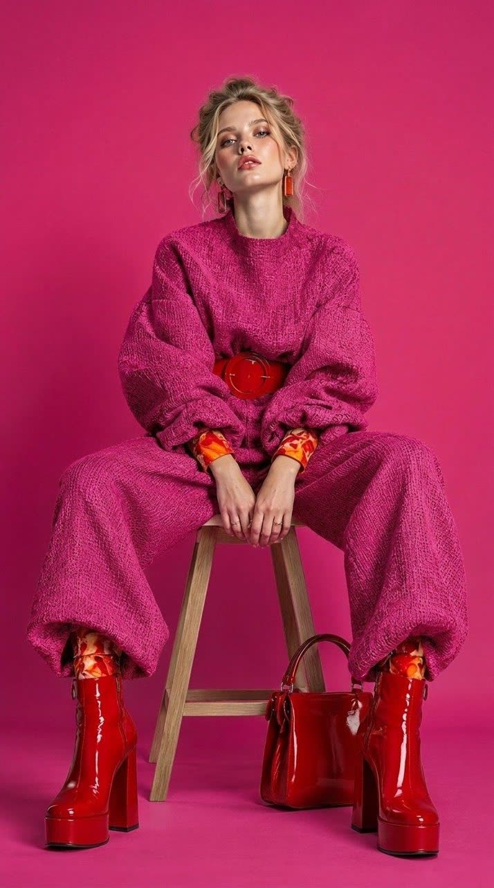

Attitude editorial look (JSON)
WRD-017WardrobeNano Banana Proby Cherry (@hey_am_cherry)2026-09-24

Photoreal high-fashion editorial in 9:16: monochrome hot-pink set, bold red boots, seated attitude pose.
Prompt
{
"aspect_ratio": "9:16",
"style": "photorealistic high-fashion editorial",
"subject": "young blonde woman seated confidently on a wooden stool",
"outfit": "oversized hot-pink knitted sweater and wide-leg pants, red statement belt, patterned orange-red cuffs, glossy red platform boots",
"accessories": "red patent handbag, orange statement earrings, delicate rings",
"pose": "front-facing, legs wide, hands resting between legs, confident expression",
"background": "seamless vibrant hot-pink studio backdrop and floor",
"lighting": "soft professional studio lighting, subtle shadows",
"composition": "centered full-body portrait, straight-on camera, clean symmetrical framing",
"details": "realistic skin, detailed knit texture, glossy leather, bold coordinated colors"
}Tags: monochrome styling, editorial, JSON prompt